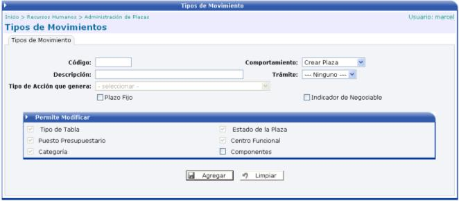
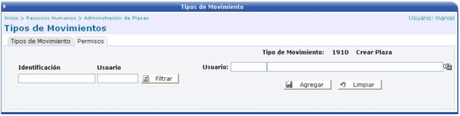

Los tipos de movimientos que se pueden crear en esta opción van a tener tres tipos de comportamiento diferente: Crear Plaza, Modificar Atributo, o Cambio de Estado. Dependiendo del comportamiento seleccionado así se activarán los checks de lo que se permite modificar.
El combo del “Tipo de Acción que Genera” se activa si el comportamiento es Modificar Atributo, o Cambio de Estado. El check de Plazo Fijo, filtra el tipo de acción que genera, mostrando solo las acciones que son de plazo fijo.
El check de "Indicador de Negociable", permite en la acción capturar un monto mayor de salario, de la que se parametrizó en la categoría – clase de la plaza (estructura salarial):

En el TAB de Permisos, se pueden agregar usuarios que son los que van a tener permiso a utilizar el tipo de movimiento creado:
